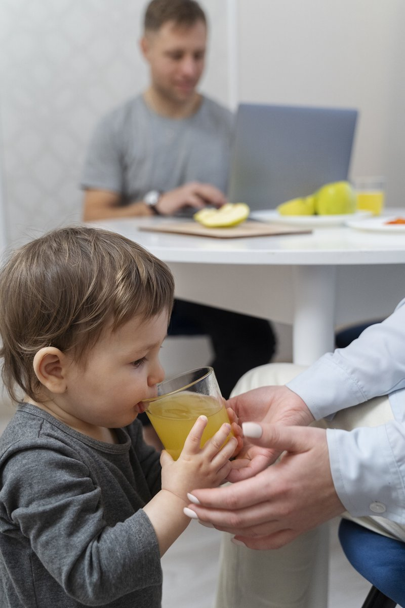

Healthy Little Me helps children, teens, and families build a lasting, healthy relationship with food, through secure video visits, wherever you call home.

Nisrine Hamad is a Registered Dietitian Nutritionist with more than 20 years of experience in pediatric nutrition and family counseling. She holds a Master's degree in Pediatric Nutrition and Dietetics from The Ohio State University, completed her studies and residency at the American University of Beirut, and received advanced clinical training at Nationwide Children's Hospital.
Her approach is calm, direct, and collaborative grounded in evidence-based, size-inclusive care and realistic, sustainable goals for every child and family she works with, delivered entirely through telehealth for families anywhere.
Three principles guide every visit, every plan, and every conversation at Healthy Little Me.
Care led by a Registered Dietitian with advanced pediatric training from Ohio State University and Nationwide Children's Hospital.
Evidence-based methods, motivational interviewing, CBT techniques, and Health At Every Size®-aligned counseling. No fads, no guesswork.
Every plan is tailored to your child's medical history, family dynamics, and goals, treating the whole family, not just a number.
Two decades focused specifically on children, teens, and families. Not general adult nutrition.
Trained in the clinical nuance pediatric and teen eating disorders require — including ARFID, disordered eating, and body image concerns — from early intervention onward.
Full care from home, on your schedule. No travel, no waiting rooms.
Parents and caregivers are treated as partners in care, every step of the way.
Close collaboration with pediatricians, therapists, and specialists for connected care.
Focused, clinical expertise across the areas that matter most for children and teens.
Involving the whole family in building sustainable, positive eating habits at home.
Specialized, HAES-informed support for children and teens navigating ARFID (Avoidant/Restrictive Food Intake Disorder), Anorexia Nervosa, Bulimia Nervosa, binge eating disorder, OSFED, orthorexia, and other disordered eating patterns — often using a Family-Based Treatment (FBT) approach.
Safe, personalized nutrition plans for infant feeding difficulties, picky eating, and selective eating, supporting your child's healthy growth and development.
Nutrition strategies to help manage blood sugar and hormone-related conditions in kids and teens.
Weight-inclusive, body image healing focused on health behaviors, not numbers on a scale.
Clinical support for medically complex feeding needs and breastfeeding/lactation guidance.
A few words from families we've had the privilege to work with.
Answers to what families most often ask before booking with Healthy Little Me.
Yes. Nisrine works with children and teens with ARFID, developing personalized, gradual feeding plans that respect sensory and anxiety-related barriers to eating, in close coordination with families and other providers involved in your child's care.
Healthy Little Me provides telehealth nutrition support for pediatric and adolescent Anorexia Nervosa, Bulimia Nervosa, Binge Eating Disorder, OSFED, ARFID, orthorexia, and general disordered eating, using an evidence-based, HAES-informed approach tailored to each child.
Family-Based Treatment is an evidence-based approach that empowers parents and caregivers to take an active role in their child's nutritional recovery. Many of our eating disorder and disordered eating plans draw on FBT principles alongside individualized, family-centered counseling.
Health At Every Size (HAES) and intuitive eating mean we focus on health behaviors, body respect, and a child's internal hunger and fullness cues, rather than weight or numbers on a scale. It's a weight-inclusive, size-inclusive philosophy behind every plan we build.
We accept Aetna, Cigna, UnitedHealthcare, Optum, Oxford, Golden Rule, and United Medical Resources (UMR) through our scheduling partner, Fay Nutrition. Cash-pay appointments are also available for families without in-network coverage or who prefer to book directly.
Nisrine is licensed to see clients via telehealth in Arizona, California, Colorado, Connecticut, Hawaii, Indiana, Massachusetts, Michigan, New Jersey, New York, Ohio, Oklahoma, Oregon, Pennsylvania, Texas, Virginia, and Wisconsin.
Yes. We support infants, toddlers, and young children with severe picky eating, selective eating, and general infant feeding difficulties, building safe, age-appropriate plans to support healthy growth and development.
Yes, we're 100% virtual with no physical office. All visits happen over secure video call, Monday through Friday, 10:00 AM–5:00 PM, so families can get pediatric dietitian support from wherever they call home.
Choose the option that fits you best. Scheduling only takes a minute.
1265310296
Aetna, Cash Pay, Cigna, Golden Rule, Optum, Oxford, United Healthcare, United Medical Resources (UMR)
Arizona, California, Colorado, Connecticut, Hawaii, Indiana, Massachusetts, Michigan, New Jersey, New York, Ohio, Oklahoma, Oregon, Pennsylvania, Texas, Virginia & Wisconsin
Book your appointment through our insurance-based scheduling partner, Fay Nutrition.
Book with InsuranceChoose to pay via Venmo or book a time directly online.
Office hours: Monday–Friday, 10:00 AM–5:00 PM. Healthy Little Me is a telehealth-only practice. All visits are conducted via secure video call.
Send us your details and we'll reply by email as soon as we can.